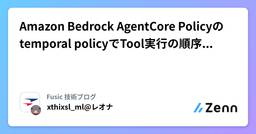

Fusic 技術ブログのフィード
https://zenn.dev/p/fusic
さまざまな個性を受け入れて有機的につなぐ社内環境を整える。あらゆる事業機会の創出と実現を繰り返し、世の中に対する視点を絶えず増やして成長していく。あっと驚くような角度から発展できるポイントを見つけ、そこにいい感じにフィットする形でテクノロジーを組み込んで、世の中をちょっとずつ、時
フィード

Amazon Bedrock Web Searchの外部WebアクセスをIAMポリシーで制限できるか検証してみた
Fusic 技術ブログのフィード
Fusicのレオナです。 Amazon Bedrock（以下、Bedrock）のWeb Searchは、Bedrockに組み込まれたサーバーサイドのツールです。モデルがリクエストの途中でWebの情報を取得し、引用付きの回答を生成します。 このWeb Searchにexternal_web_accessパラメータが追加されました。デフォルトはtrueで、Web SearchのFetch操作は、必要なIAM権限がある場合、キャッシュにないページを公開Webから取得できます。 そこで本ブログでは以下の2点を検証しました。 Responses APIでのexternal_web_accessの指...
2日前

Amazon Bedrock AgentCore Policyのtemporal policyでTool実行の順序を強制してみた
Fusic 技術ブログのフィード
Fusicのレオナです。今回はAmazon Bedrock AgentCore Policyに追加されたtemporal policyとrate limitingを、東京リージョンで試してみました。 temporal policyは、AIエージェントがToolを呼ぶときに、そのセッションでそれまでに何をしたかを見て許可と拒否を決める仕組みです。「承認のToolが正常に完了してからでなければ、サービス再起動のToolは呼ばせない」といったルールを書けます。 本ブログでは以下の点を検証します。 承認前は拒否、承認後は許可という動作と、引数・セッション・参照期間による判定 temporal p...
3日前

AWS Data ExportsのAmazon Bedrock標準メタデータの列名を、エクスポートなしで確認してみた
Fusic 技術ブログのフィード
Fusicのレオナです。 AWS Data ExportsのCUR 2.0（Cost and Usage Report 2.0）に、Amazon Bedrock向けの標準化された製品属性が追加されました。モデル名やプロバイダー、推論タイプなどを共通の項目として扱えるようになり、Bedrockの費用を分類しやすくなります。 今回は、手元の請求データをCost ExplorerのSERVICEとUSAGE_TYPEで集計し、モデル名や入力・出力トークンの情報がどのように表れるかを確認しました。あわせて、Data Exports APIの列定義と公式ドキュメントから、CUR 2.0の標準化属性...
4日前
AWS BatchとAmazon SageMaker Processingを、起動までの待ちと上限を超えたときの扱いを比べてみた 1
1
Fusic 技術ブログのフィード
Fusicのレオナです。 機械学習の前処理や集計のように、コンテナを動かして終わる処理をAWSで流すとき、候補になるのがAWS BatchとAmazon SageMaker AIのProcessingジョブです。どちらもコンテナのイメージを指定すると、AWS側が計算資源を用意してジョブを流し、終われば計算資源を片付けます。一方で、準備するリソース、ジョブが動き出すまでの待ち時間、上限を超えたときの扱い、費用には違いがあります。どちらを選ぶかは、その違いがどの条件で影響してくるかで決まります。 そこで本ブログでは、同じコンテナを両方に流し、以下の4点を検証します。 1本のジョブを投入してか...
5日前
Amazon Bedrock AgentCore harnessのライフサイクルフックを試してみた
Fusic 技術ブログのフィード
Fusicのレオナです。 Amazon Bedrock AgentCore harness（以下、AgentCore harness）は、モデルの呼び出し、ツールの選択と実行、結果のモデルへの受け渡しからなるエージェントのループをマネージドで提供する機能です。モデル、ツール、上限値などを設定として宣言することで、ループを自分で実装せずにエージェントを動かせます。2026年6月に一般提供が始まりました。 ループのコードを自分で持たないので、「このツール呼び出しは止めたい」「呼び出しのログを別のシステムに送りたい」という処理をどこに差し込むかが問題になります。2026年9月に追加されたlif...
6日前
Amazon Bedrock AgentCore Gatewayのインターセプターで、書き換えの範囲と失敗時の挙動を確認してみた
Fusic 技術ブログのフィード
Fusicのレオナです。 Amazon Bedrock AgentCore Gateway(以下、AgentCore Gateway)は、AWS Lambdaの関数やAPIをMCPのツールとして1つのエンドポイントにまとめるサービスです。AgentCore Gatewayには呼び出しのたびに自前のAWS Lambdaの関数を挟めるインターセプター(interceptor)があり、ツールごとの認可、引数の書き換え、レスポンスのマスクといった処理をツールの実装に手を入れずに足せます。認可をインターセプターに置くなら、インターセプターが例外を投げたりタイムアウトしたりしたときに、リクエストが通...
6日前
Amazon Bedrock AgentCore Evaluationsでエージェントの評価からA/Bテストまで試してみた 1
Fusic 技術ブログのフィード
Fusicのレオナです。 Amazon Bedrock AgentCore Evaluations(以下、AgentCore Evaluations)は、AIエージェントの会話のログ(トレース)をLLMやプログラムで採点する機能です。データセットに書いたシナリオでエージェントを呼び出し、そのまま採点する仕組みをDataset evaluationと呼びます。AgentCore SDKのdataset runnerのほか、AgentCore CLIのagentcore eval ondemand simulateやagentcore eval batch-evaluation simula...
7日前
Amazon Bedrock AgentCore PolicyのGuardrailsをLLMの呼び出し経路に設定してみた
Fusic 技術ブログのフィード
Fusicのレオナです。 Amazon Bedrock AgentCore Policy(以下、AgentCore Policy)で、ポリシーの中でAmazon Bedrock Guardrailsの判定を使える機能が一般提供になりました。Amazon Bedrock AgentCore Gateway(以下、AgentCore Gateway)の推論ターゲットにこのポリシーを付けると、OpenAI形式とAnthropic形式のLLMの呼び出しに、プロンプト攻撃や個人情報のチェックを1か所でかけられます。 そこで本ブログではAgentCore Gatewayの推論ターゲットにAgentC...
8日前
Amazon CognitoでOIDC認可サーバーを構築し、API GatewayでJWTを検証してみた
Fusic 技術ブログのフィード
こんにちは。Fusicの北野です。 AWS で OIDC（OpenID Connect）を実現する方法の一つとして、Amazon Cognito User Pool を認可サーバーとして利用できます。 では、Cognitoで発行したアクセストークンをどのように検証することができるのでしょうか？ 本記事では、以下のことを解説していきます。 RDS の既存ユーザーを初回ログイン時に Cognito へ移行する User Migration Lambda の仕組み API Gateway が Cognito の JWKS 公開鍵を使い、アクセストークン を検証して保護された Lambda AP...
9日前
Amazon Bedrock AgentCore Gatewayの推論ターゲットでモデルフォールバックを試してみた
Fusic 技術ブログのフィード
Fusicのレオナです。 Amazon Bedrock AgentCore Gateway(以下、AgentCore Gateway)の推論ターゲットに、失敗したときに別のモデルへ切り替えるモデルフォールバックが追加されました。呼び出す側のコードにリトライやフォールバックを書かなくても、ゲートウェイのルールにフォールバック先と切り替える条件を設定しておけば、AgentCore Gatewayが別のモデルに切り替えます。 そこで本ブログではわざと失敗するターゲットを用意し、以下の3点を検証します。 フォールバックがどの失敗で起き、どの失敗では起きないか 失敗が続いたときのサーキットブレーカ...
10日前
PostgreSQLのバージョンアップ後に ANALYZE VERBOSE を実行する理由
Fusic 技術ブログのフィード
こんにちは、Fusicの北野です。 業務の中で、PostgreSQLのバージョンアップ後に、統計情報を更新するためのANALYZE VERBOSEというものを実行する機会がありました。その時はとりあえず言われた通りに実行しましたが、「なぜ統計情報を更新する必要があるのか」を十分に理解できていませんでした。 そこで本記事では、PostgreSQLにおける統計情報の役割と、実行計画との関係を整理します。 データベースにおける統計情報とは、テーブルのデータ量や、列に格納されている値の分布を要約した情報です。統計情報はメタデータの一種であり、テーブルの推定行数や、NULLの割合、列に含まれる異な...
16日前
Amazon Bedrock AgentCore Gatewayで、vLLMのQwenとAmazon Bedrockを使い分けてみた
Fusic 技術ブログのフィード
Fusicのレオナです。 社内ではOpenCodeから量子化されたQwen3.6を使っています。モデルはRunPodのGPUを借りてvLLMで動かしており、GPUを借りるのは平日の日中だけです。GPUがない時間帯は、Amazon Bedrockで使えるモデル群を代わりに答えさせたいと考えました。 そこで、Amazon Bedrock AgentCore Gateway(以下、AgentCore Gateway)の推論ターゲットを使い、vLLM経由とAmazon Bedrockを、1つのOpenAI互換のAPIから呼べるようにしました。本ブログでは、以下の4点を検証します。 vLLMとAm...
17日前
Amazon Bedrock AgentCore Gatewayの推論ターゲットで利用者別のトークン上限を試してみた
Fusic 技術ブログのフィード
Fusicのレオナです。 組織や複数人でAmazon Bedrockのモデルを使わせるとき、利用者ごとにIAMの権限やAPIキーを配ると、誰がどれだけ使ったかを集計しにくく、使いすぎを止める手段もありません。そこで、モデルの手前にLLMプロキシを1つ置き、利用者の認証、上限、利用実績の記録をそこに集める構成がよく取られます。Amazon Bedrock AgentCore Gateway(以下、AgentCore Gateway)には、このLLMプロキシの役割を持つ推論ターゲット(inference target)と、1分あたりのトークン数でかけるレート制限が追加されました。 そこで本ブ...
24日前
EC2 インスタンスタイプの選び方：M シリーズを基準に要件から考える
Fusic 技術ブログのフィード
こんにちは、Fusicの北野です。 EC2のインスタンスを起動する際、インスタンスタイプが多すぎて「どのインスタンスタイプを使えばいいのだろうか。」となった経験はありませんか？ mとついてるのは汎用型。rとついているのはメモリ最適型。のように断片的な知識はあっても要件にあったインスタンスタイプを選ぶことは難しいです。 この記事では、EC2のインスタンスタイプの種類とその選定方法についてまとめます。 EC2のインスタンスタイプは基本的にこのような形になっています。 左側のインスタンスファミリーはEC2インスタンスの種類のことで、このように分けられます。 そして、右側のインスタンスサイズはE...
25日前
AWS HealthOmicsでRNA-seqの公開データを解析してみた
Fusic 技術ブログのフィード
Fusicのレオナです。 RNA-seqの解析ではQC、正規化、クラスタリングといった手順をワークフローとして組み、計算機で流します。手元のPCで流せる大きさのデータでも、設定を変えて何度も流し直したり、どの設定で流した結果なのかを残したりするには、実行の基盤が要ります。AWS HealthOmicsは、この実行基盤を提供するマネージドサービスです。 本ブログでは10x Genomicsが公開している1細胞RNA-seqのデータを使い、以下を試します。 AWS HealthOmicsのプライベートワークフローを流すまでに用意するもの カウント行列をQCからクラスタリングまで流した結果 ワ...
1ヶ月前
「止まっている案件はどれ?」にSQLで答える。Snowflake Cortex AIで議事録を自動分類する
Fusic 技術ブログのフィード
会議の議事録は、書いて共有フォルダに置いたらそれっきり、になりがちです。 後から「Snowflakeの話をしていた会議で、止まっている案件はどれだっけ?」と探そうとしても、ファイル名と全文検索くらいしか手がかりがありません。 そこで本記事では、Markdownで書いた議事録をS3に置くだけで、Snowflake上で次のメタデータが自動で付く仕組みを作ります。 関連する技術タグ(タグマスターにあるものだけ。複数) 関連するプロジェクト(プロジェクトマスターから1つ。該当なしもあり) 状況(進行中 / ブロック中 / 完了 など) 要約と、判断の根拠になった文 例えば、次のような議事録をアッ...
1ヶ月前
日本語の個人情報を Bedrock Guardrails, SDP, Presidio でマスキングして比較する
Fusic 技術ブログのフィード
こんにちは、Fusicの大宮です。 問い合わせメールや通話記録を外部に渡したり、生成AIで分析したりする前には、個人情報を消したい（マスキングしたい）、という場面があるかと思います。 ただ、日本語の文章には、全角の数字や和暦、話し言葉など、英語にはない書き方が多くあります。 2026年10月、クラウドのサービスとオープンソースのツールで、日本語の個人情報をどこまでマスキングできるのか気になり、試しました! 比べたのは次の3つです。 Sensitive Data Protection（Google Cloud。以下 SDP） Amazon Bedrock Guardrails（AWS。以下...
1ヶ月前
Snowflake CLIのキーペア認証を1Password CLIと連携して、秘密鍵をPCに残さず使い分ける
Fusic 技術ブログのフィード
Snowflake CLI（snow コマンド）からSnowflakeに接続する際、パスワード認証は手軽ですが、MFAの有効化や、パスワードそのものの管理が悩みの種になります。 そこで有力な選択肢となるのがキーペア認証です。公開鍵をSnowflakeのユーザーに登録し、秘密鍵で署名することで認証します。パスワードもMFAのプロンプトも不要になり、自動化にも向いています。 一方で、秘密鍵を ~/.snowflake/rsa_key.p8 のようにPCへ置きっぱなしにするのは、できれば避けたいところです。 そこで本記事では、次の内容を順に紹介します。 キーペアの生成と、Snowflakeユー...
2ヶ月前
AWS Cost ExplorerのAmazon Bedrock製品属性で、できることとできないことを確認してみた
Fusic 技術ブログのフィード
Fusicのレオナです。 2026年10月8日に、AWS Cost ExplorerなどでAmazon Bedrockの費用を製品属性で分けられるようになりました。対象はAWS Cost Explorer、AWS Budgets、AWS Cost Management Dashboardsの3つです。 Amazon Bedrockを複数人で使うと、どのモデルにいくらかかっているかに加えて、誰がいくら使ったのかも気になります。これまでのAWS Cost Explorerでは、Anthropicのモデルの費用はモデルごとのサービス名に分かれていました。「Claude Opus 5 (Amaz...
2ヶ月前
動画を直接埋め込んで監視カメラ動画を日本語で検索する
Fusic 技術ブログのフィード
こんにちは、Fusicの大宮です。 前回の記事では、監視カメラの映像を Gemini で5秒ごとの説明文にして、 その説明文を埋め込みモデルでベクトルにし、日本語の質問文で場面を探す、という方式を試しました。 前回の記事の最後で、 「説明文に書かれていないものは、どんなに良い埋め込みモデルを使っても検索できない」 という課題が見えました。 そこで今回は、動画そのものをベクトルにする方式を試して、前回の説明文の方式と比べてみました。 ◼︎ 動画をそのまま埋め込めるモデル2つを比較 → ほぼ同じ！ どちらも約7割の質問で、探したい場面が上位3件に出ました。 （Vertex AI の gemi...
2ヶ月前